Sincroniza el móvil y el PC sin internet
Streak no tiene cuenta ni permiso de internet. Es a propósito: si la app no puede llegar a la red, tus hábitos no pueden salir de ella. La pega es evidente. ¿Cómo la usas en el móvil y en el ordenador a la vez?
La respuesta es una carpeta. Streak puede guardar sus copias en la carpeta que elijas, y la lee cada vez que se abre. Si algo mantiene esa carpeta igual en los dos dispositivos, Streak hace el resto. Ese algo es Syncthing, una herramienta libre y gratuita que copia ficheros directamente entre tus dispositivos por tu propia red.
He probado cada paso con un móvil Android y un PC con Windows. En Linux funciona igual.
Lo que necesitas
- Streak 2.3.0 o más nuevo en el móvil y en el PC.
-
Syncthing en los dos:
- Android: Syncthing-Fork desde F-Droid.
- Windows: SyncTrayzor. Basta con el zip portable x64: lo descomprimes y lo abres.
-
Linux: el paquete
syncthingde tu distribución.
- Los dos dispositivos en el mismo Wi-Fi cuando quieras que se pongan al día.
Syncthing sale en inglés en las capturas, así que uso esos nombres.
1. Que Syncthing no salga de tu red
De serie, Syncthing puede usar servidores de internet para encontrar tus dispositivos y pasar datos entre ellos. En casa no te hace falta nada de eso. Apágalo en los dos dispositivos:
- PC: en Syncthing, abre Actions → Settings → Connections.
- Móvil: en Syncthing-Fork, abre el menú lateral y luego Settings → Syncthing Options.
Apaga Enable NAT traversal, Global Discovery y Enable Relaying. Deja encendido Local Discovery: así es como los dos dispositivos se encuentran en tu Wi-Fi.
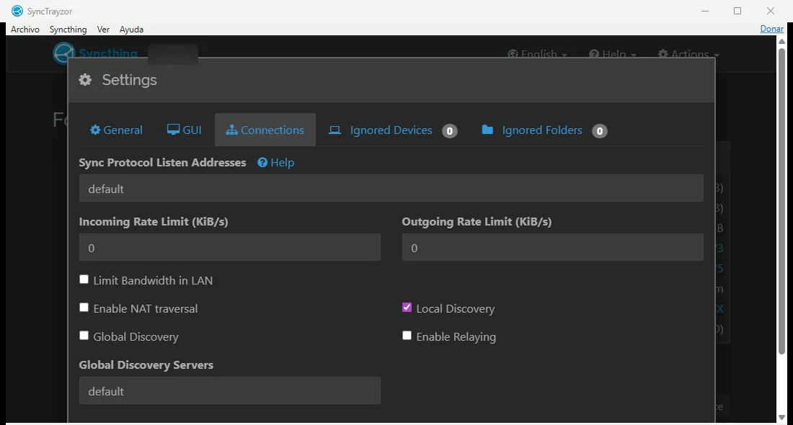
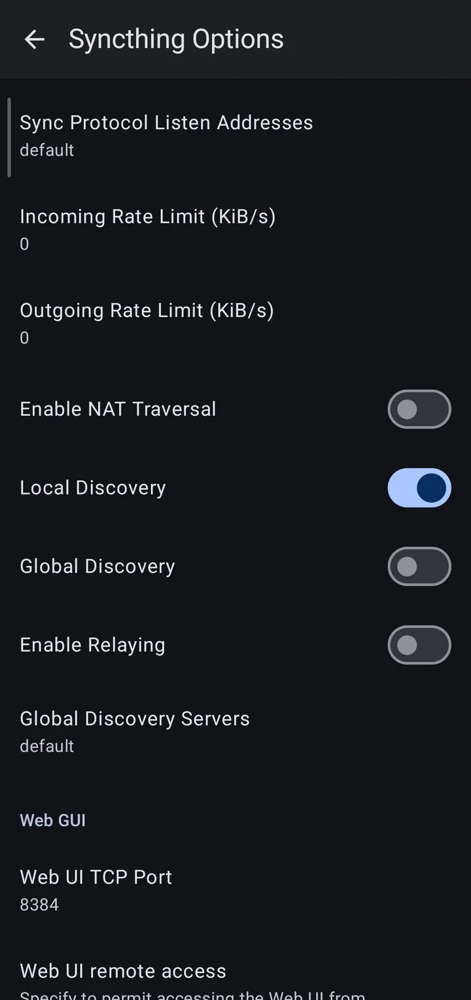
2. Empareja los dos dispositivos
En el PC, abre Actions → Show ID. Sale un código largo y un código QR.
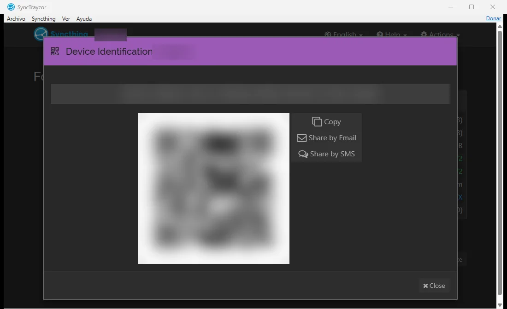
En el móvil, ve a la pestaña Devices y toca el botón de añadir de arriba. Escanea el QR (o pega el código), ponle al PC un nombre que reconozcas y toca el check.
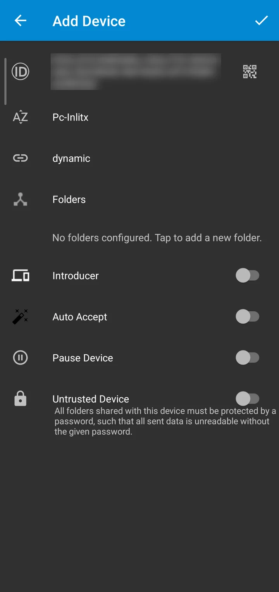
Unos segundos después, el PC pregunta si acepta el móvil. Toca Add Device, ponle un nombre y Save.
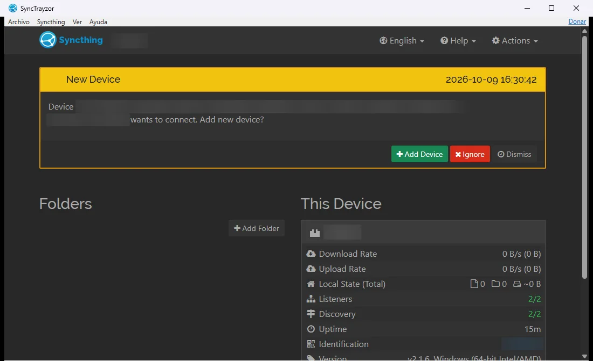
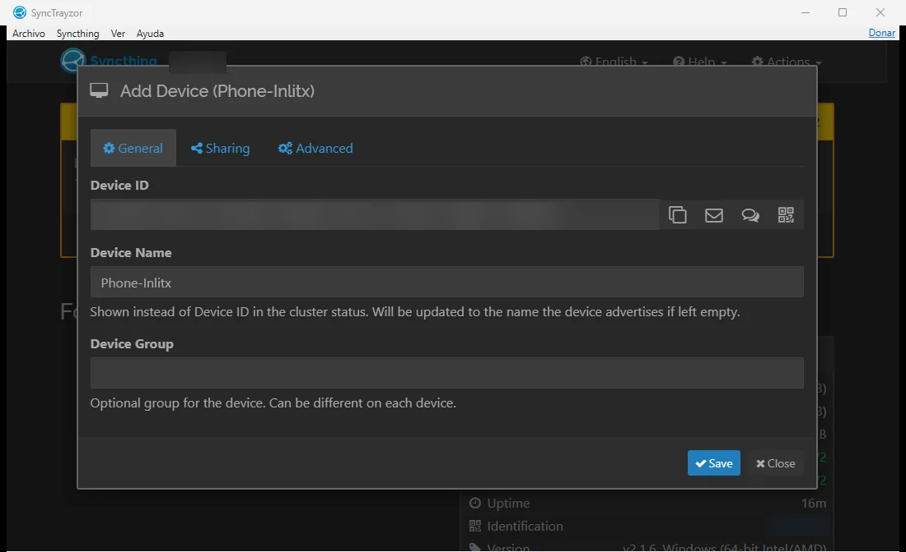
3. Comparte una carpeta
No compartas la carpeta de datos de Streak. En el PC, Streak guarda ahí su base de datos en uso (la ves en Ajustes → Datos → Carpeta de datos; en Windows es
Documents\Streak). Copiarla entre dispositivos con Streak abierto puede romperla. Usa una carpeta nueva y vacía con otro nombre, comoStreakSync.
En el móvil, ve a la pestaña Folders y toca el botón de añadir carpeta.
Llámala StreakSync, elige (o crea) Documents/StreakSync como
directorio, enciende tu PC en Devices y toca el check.
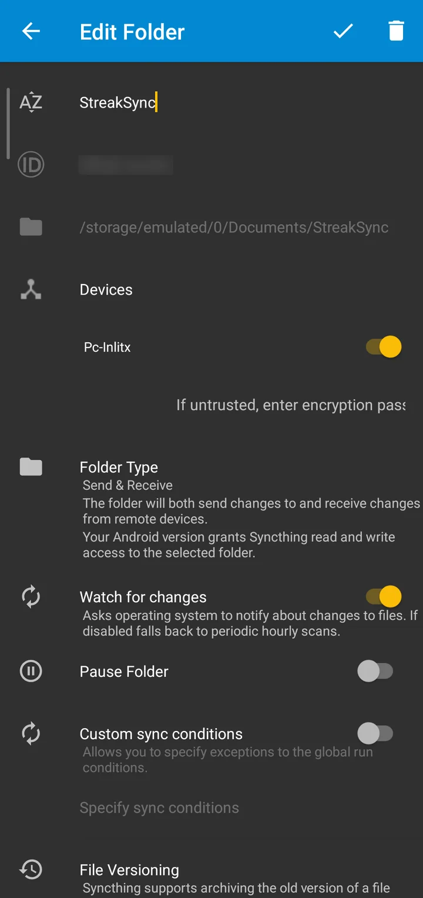
Ahora el PC pregunta si añade la carpeta. Toca Add, pon en
Folder Path ~\Documents\StreakSync (o donde quieras,
mientras no sea la carpeta de datos de Streak) y Save.
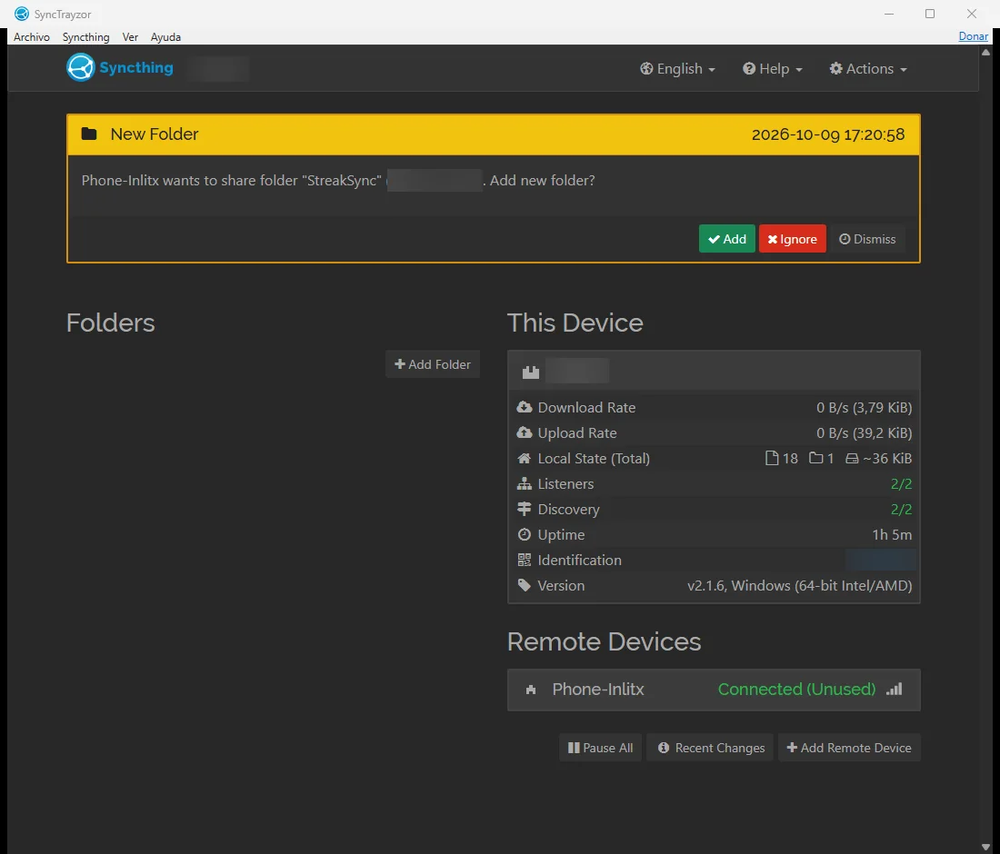
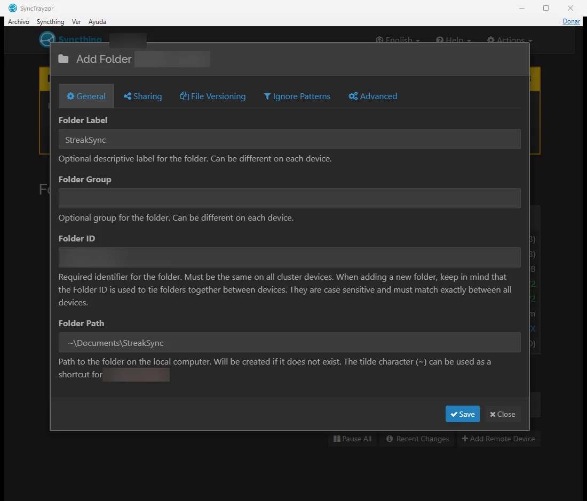
Cuando los dos lados dicen Up to Date, la carpeta ya está compartida.
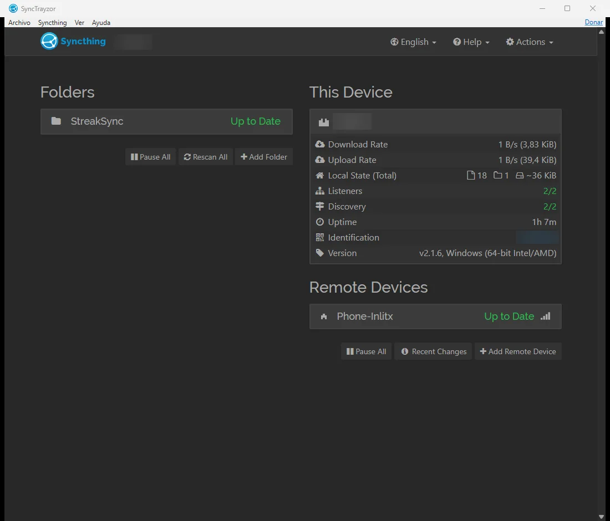
4. Dile a Streak que use esa carpeta
En cada dispositivo, abre Streak y entra en Ajustes → Datos → Copia automática:
- Elige Cada día.
-
Toca Carpeta y elige
StreakSync. En Android, Streak pide acceso a tus archivos la primera vez. - La Copia legible es opcional. Escribe además tus hábitos en ficheros Markdown que puedes abrir con cualquier editor.
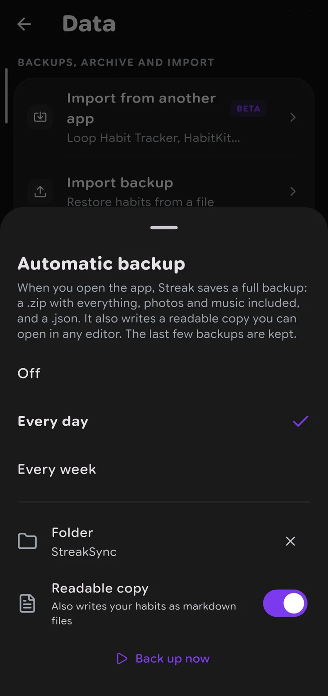
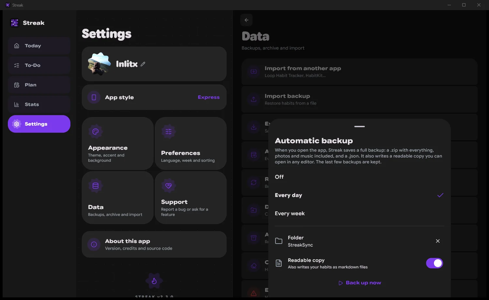
A partir de ahí, Streak guarda una copia en esa carpeta al abrirlo (una vez al día, con Cada día), y cada vez que arranca lee lo que tu otro dispositivo dejó allí.
5. Úsalo
Pongamos que has marcado unos hábitos en el móvil. Para mandarlos ya, abre Copia automática y toca Hacer copia ahora. Syncthing pasa la copia nueva al PC en unos segundos.
En el PC, abre Streak y tus cambios ya están. Si ya estaba abierto, ve a Ajustes → Datos → Refrescar. Trae lo que dejó el móvil y a la vez guarda una copia nueva del PC.
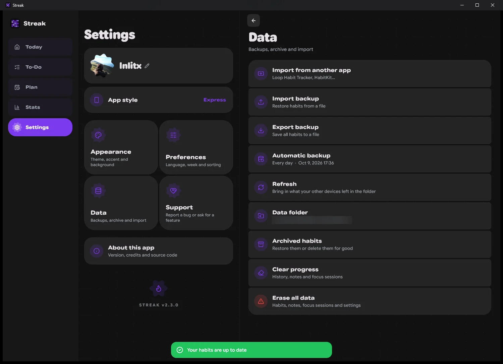
Al revés funciona igual: Refrescar en el móvil trae lo que hiciste en el PC.
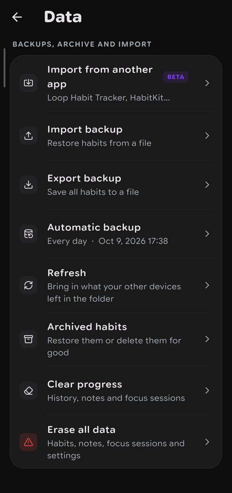
En mi prueba creé un hábito en cada dispositivo. Tras un Refrescar en cada lado, los dos tenían los dos.
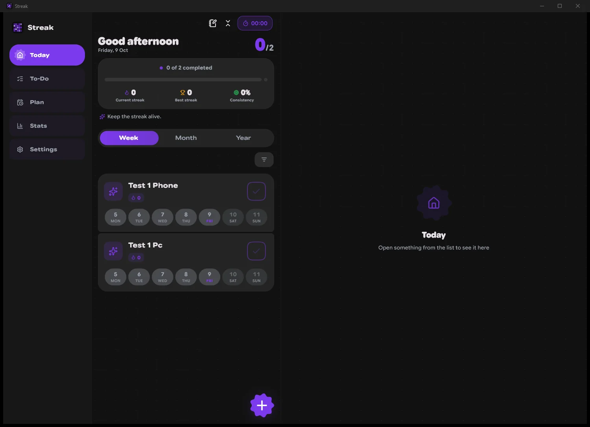
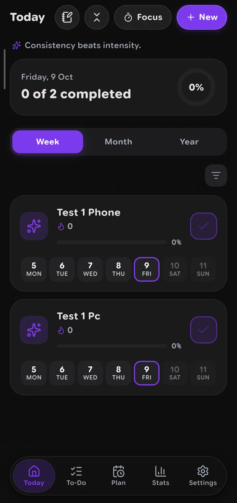
Conviene saber
- Un día marcado nunca se pierde. Streak fusiona, no reemplaza. Un día marcado en cualquiera de los dos se queda marcado. Si los dos tienen el mismo día, gana la cantidad mayor.
- Si un cambio no aparece, toca Refrescar en el dispositivo donde lo hiciste y luego en el otro. Streak lee la copia más nueva de la carpeta, así que si los dos guardaron sin leerse antes, puede tardar una vuelta más.
- Desmarcar no viaja. Como al fusionar no se borra nada, un día que desmarcas en un dispositivo sigue marcado en el otro. Desmárcalo también allí.
- Los ajustes de un hábito siguen a la copia más nueva. Si cambias el nombre o la meta en un dispositivo, el otro lo recoge.
-
La copia legible es solo para leer. Para restaurar y sincronizar se
usan siempre las copias
.json.
Y ya está. Dos dispositivos, una carpeta y ni un solo byte enviado a internet.
Lo que vendrá
En una versión futura, Streak guardará y refrescará solo cada pocos minutos, o cada vez que cambies algo, así no tendrás que tocar Hacer copia ahora ni Refrescar. Seguirá funcionando sin internet.
¿Dudas?
Si tienes alguna duda, una sugerencia o algo no te funciona, déjalo en los comentarios de abajo y te ayudaremos con gusto, yo o alguien de la comunidad. Los comentarios son públicos, así que no compartas nada sensible: ni datos personales, ni IDs de dispositivo, ni rutas con tu nombre.
CommentsComentarios
Sign in with GitHub to comment or react. Everything is stored as a GitHub discussion.Entra con GitHub para comentar o reaccionar. Todo se guarda como una discusión de GitHub.